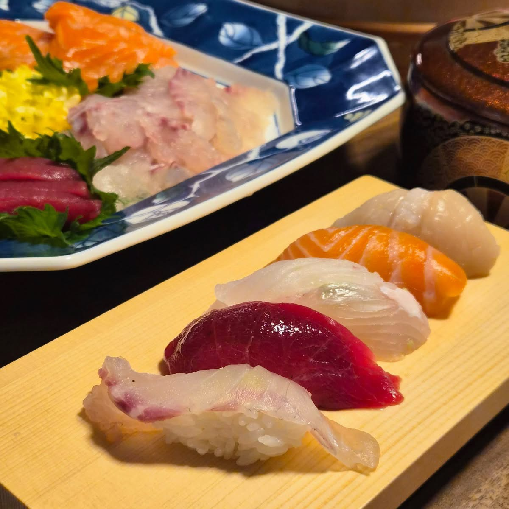
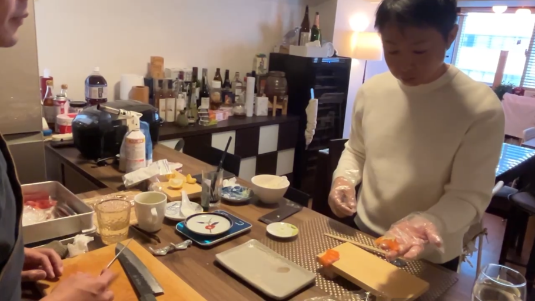
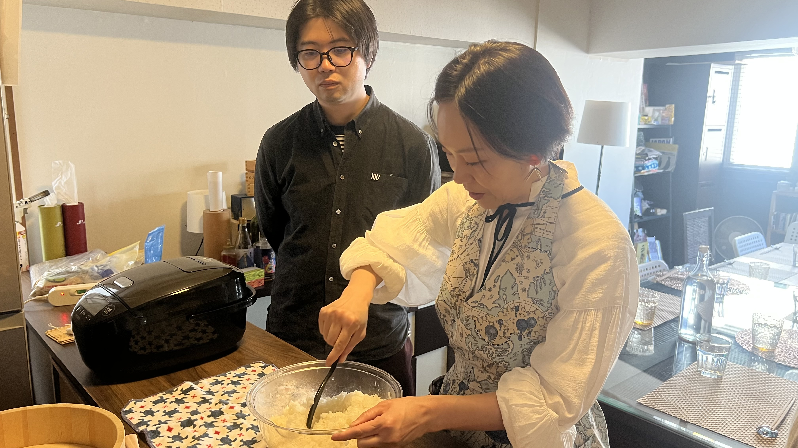
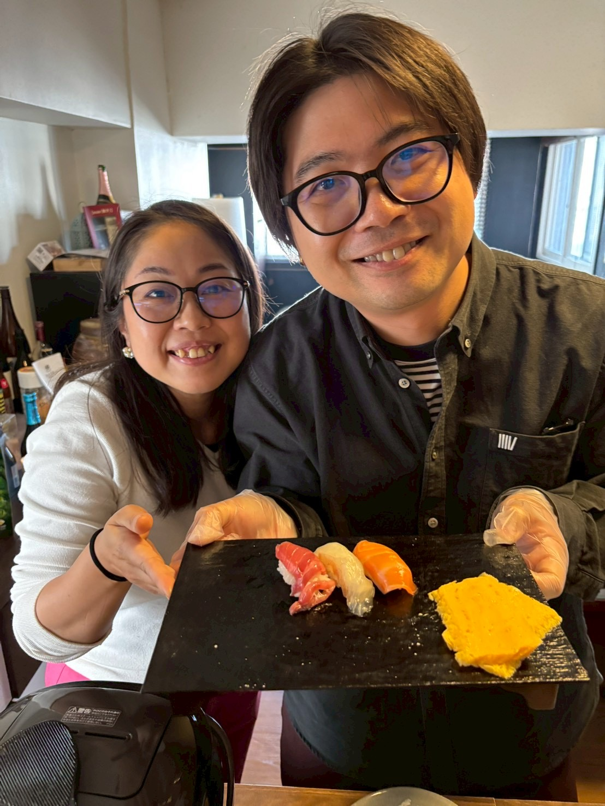
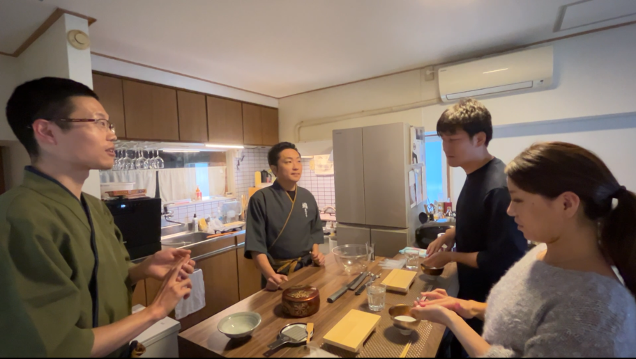
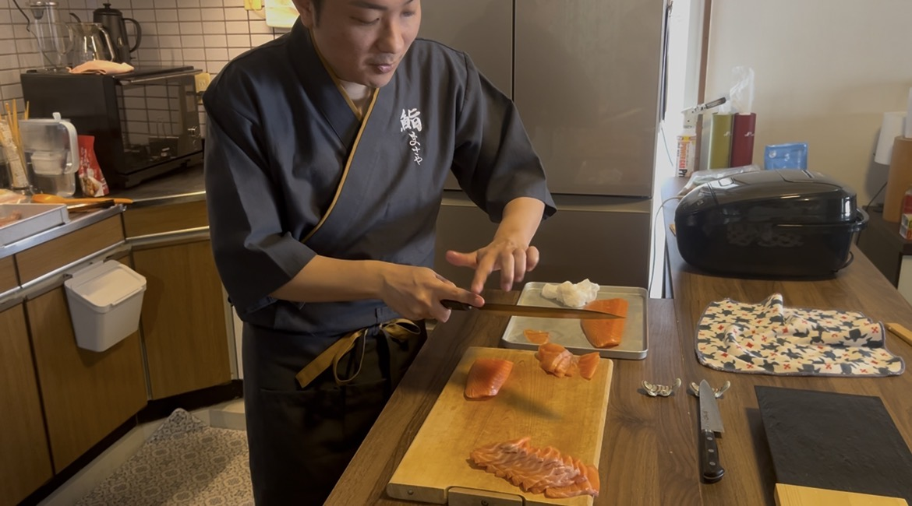
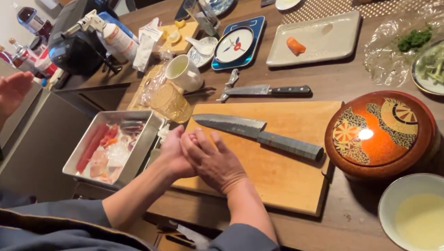
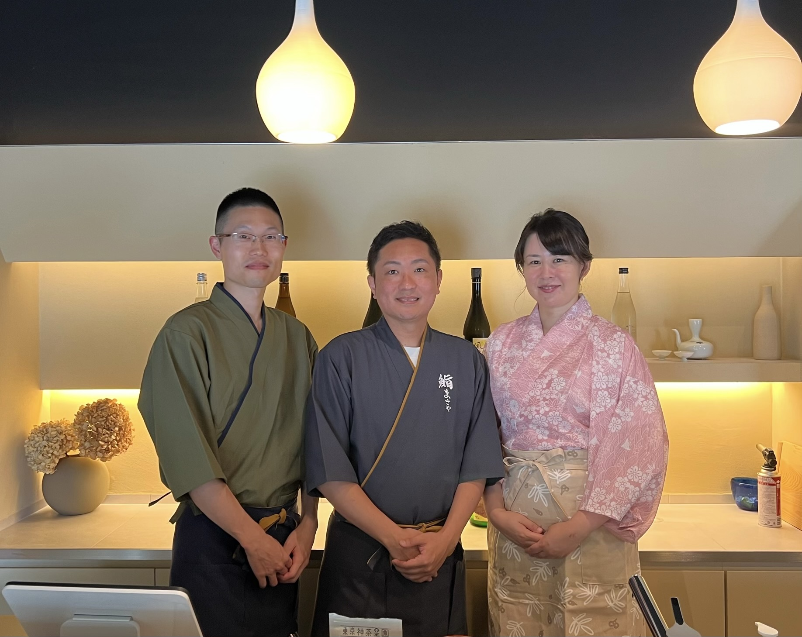

完全予約制
はじめてでも、
家族や友人にふるまえる鮨が
3時間で握れるようになる
実践講座
SCROLL
完全予約制
家でちょっと特別なことができたらいい。
家族や友人に喜んでもらえたら嬉しい。
というか
「鮨握れるよ！」って言いたくないですか？
この講座は、そんな方のための
"実践型の鮨講座"です。
鮨まさやは、紹介制の鮨会として始まりました。
コンセプトは、"鮨を通じて分かち合い、ご縁を紡ぐ"。
参加者が一品を持ち寄り、鮨を囲みながら語り合う。
そんなお裾分け文化が自然と育ち、SNS集客なしの口コミだけで毎回満席が続いています。
この実践講座は、その「鮨まさや」が開く、
鮨を"握る体験"を通じて、人とつながる場です。

受講生が握った鮨
この講座のゴールは、
プロのような所作を覚えることではありません。
一番大切にしているのは、
「これならおもてなしできる！」と、
自分で体感することです。
正直にお伝えすると、3時間で鮨を極めることはできません。
練習しなければ、すぐ忘れます。
ただし、
どう握ると美味しいのか？
回転寿司と何が違うのか？
この判断基準と感覚は、3時間でしっかり体感できます。
大事なのは、「プロみたいに握れているか」というより、
「美味しい！」と言ってもらえるかどうか。
それでいて鮨の見た目も美しく。
それが、この講座の目的です。
まず「返し」という手の動きを教える。
次に、見た目が美しい所作を意識させる。
⚠️ これが初心者にとって最も失敗しやすいルートです。
所作に意識が向くと、シャリを強く握りすぎてしまい、
食感が悪く、硬くなってしまいます。
だから、ちゃんと形になる。そして食べても美味しい。
「これならすぐにふるまえるかも」という状態を3時間で実感できます。
この講座は、単なる「思い出作り」では終わりません
一定のレベルに達した方は、定期的に開催される「弟子の握る会」に握り手として参加いただけます。 「教わる側」から「もてなす側」へ。実践の場を通じて、あなたの鮨はさらに磨かれます。
2025年6月、数万人規模の大型エンタメフェスにて、出演アーティスト向けの「楽屋鮨」を担当することが決定。 実力を認められた受講生には、こうした一般には立ち入れない特別な現場でのオファーも検討しています。
※オファーは個々の習熟度や適性に応じて判断させていただきます
鮨握り体験交流会に参加されたお客様のリアルな声です
回転寿司と全然違いました。自分で握ったものがこんなに美味しいと思わなかった
ー 30代女性
これなら家で出しても大丈夫だと思いました。シャリの固さが全然違うんですね
ー 40代女性
「鮨握れるよ」って言っても、盛りすぎじゃないなと思えました(笑)
ー 40代男性





※写真は実際の講座の様子です
握っても固くならない力加減を、体で覚えます。
シャリとネタの比率、のせ方を実際に試しながら調整します。
崩れない握り方を、手数を最小化して体験します。
大将と食べ比べ。美味しさの秘密を握りながら体感。
当日だけで終わらないように、復習用として動画をお渡しします。 家で復習するとき、「あれ、どうやるんだっけ？」となった場面で見返してください。
※動画はあくまで補助です。本質は当日の実技体験にあります。


左から：匠、将哉、優喜子
鮨職人 × プロデューサー
13年間の会社員生活を経て、メンタルダウンをきっかけに未経験から鮨職人へ。
"鮨は最上級のコミュニケーションツール"を軸に、紹介だけで満席が続く「鮨まさや」を主宰。言葉にならない本音を対話で引き出し、言語化することを得意とする。
ご縁つなぎ × 居場所づくりの達人
自宅に年間のべ700人が集まる"帰ってきたくなる場所"を育てた究極の人たらし。
原宿のプライベートサロンでは、人と人が自然につながる居場所を作ってきた。 "安心して話せる雰囲気づくり"で鮨まさやを支える女将。日本酒が大好き。
環境整備コンサルタント × コーチ
"環境整備こそ全ての活動の原点"を掲げ、人と場の土台を整えるプロ。
Gallup認定ストレングスコーチとして、安心して話せる心理的安全性もデザインする。 縁の下の力持ちとして「入った瞬間に空気が整う場」をつくる専門家。
FOR THOSE WHO WANT MORE
この実践講座で「握れる感覚」を掴んだ方のために、
3ヶ月間じっくり鮨と向き合う集中特訓コースもご用意しています。
詳細は講座内でご案内します。